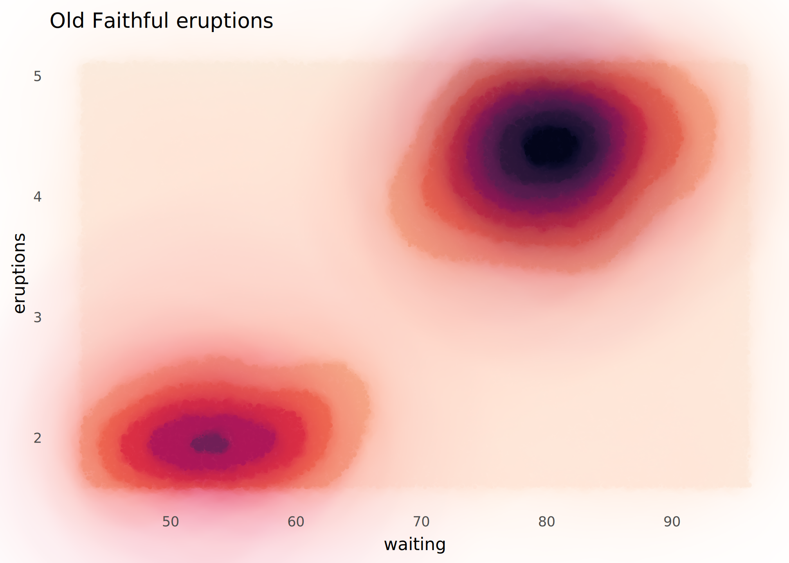
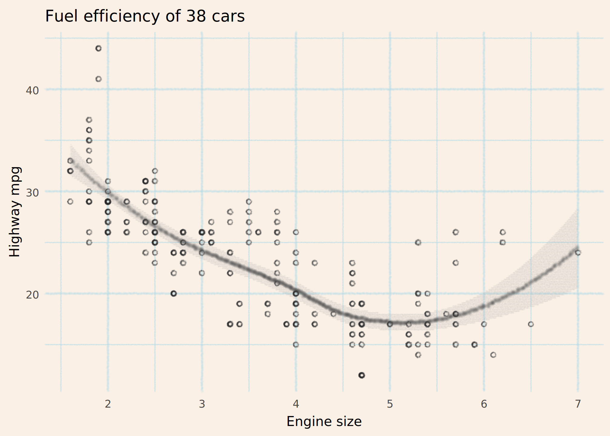
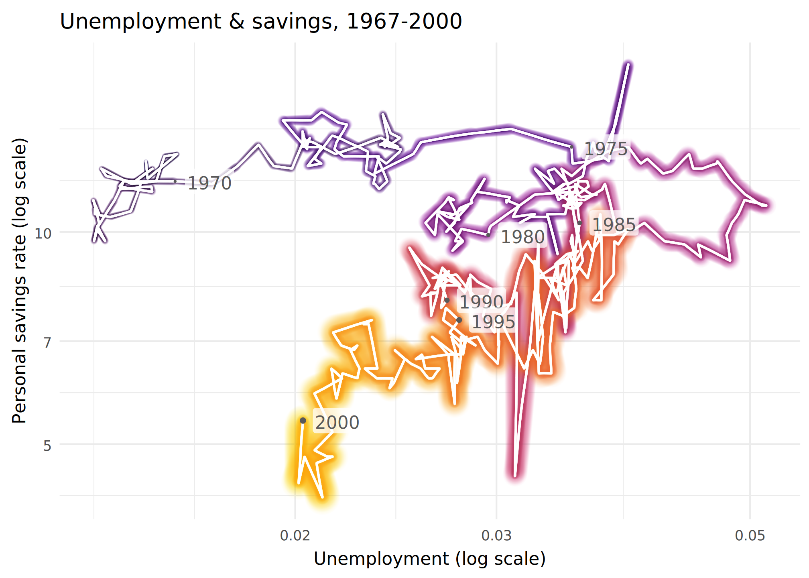
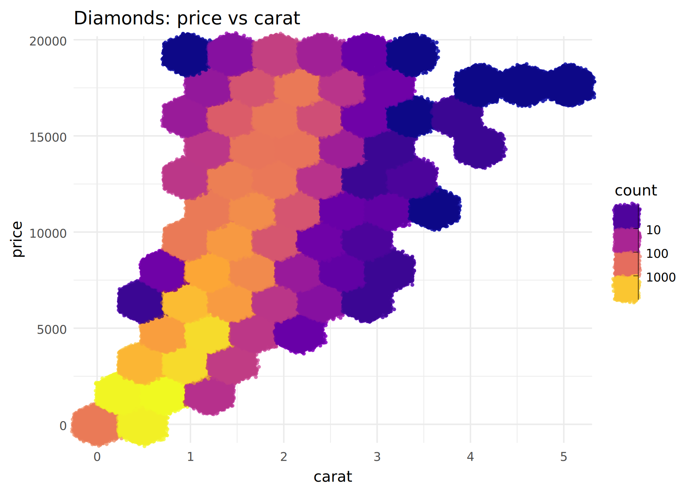
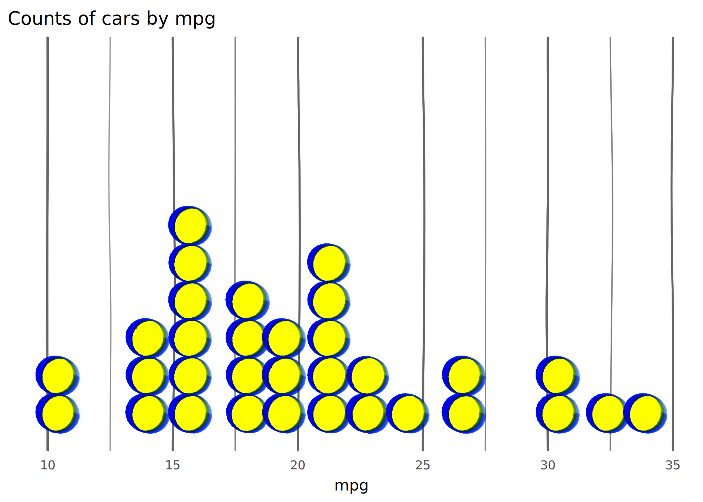
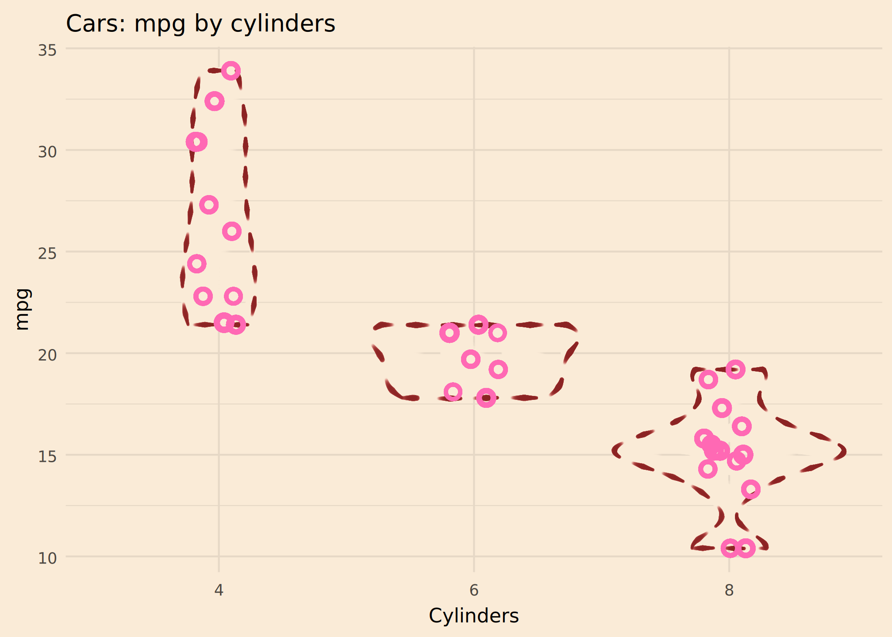

ggplot examples with mypaintr
David Hugh-Jones
2026-06-03
Source:vignettes/ggplot-examples.Rmd
ggplot-examples.Rmd
library(mypaintr)
library(ggplot2)
set_theme(theme_minimal())
knitr::knit_hooks$set(mypaint = knitr_mypaint_hook(res = 288))
knitr::opts_chunk$set(
echo = TRUE,
comment = "#>",
fig.ext = "png",
fig.width = 7,
fig.height = 5,
out.width = "75%"
)mypaintr can be used for generative art, but it might also be useful for creating high-quality graphs. To experiment, I recreated some graphs from the ggplot2 examples, using mypaintr to communicate information in a fun, stylish and clear way.
geom_contour_filled()
Wet ink brings out the contours. Beware that this is slow to complete!
ggplot(faithfuld, aes(waiting, eruptions, z = density)) +
mypaint_wrap(
geom_contour_filled(),
brush = "experimental/hard_blot"
) +
scale_fill_viridis_d(option = "F", direction = -1) +
labs(
title = "Old Faithful eruptions"
) +
theme(
panel.grid = element_blank(),
legend.position = "none"
)
geom_smooth()
A pencil sketch.
ggplot(mpg, aes(displ, hwy)) +
mypaint_wrap(
geom_point(colour = "grey15", shape = "circle open"),
brush = "classic/pencil",
hand = human_hand(wobble = 0.02)
) +
mypaint_wrap(
geom_smooth(color = "grey20", fill = "grey60"),
brush = "classic/pencil",
hand = human_hand(wobble = 0, bow = 0)
) +
labs(
title = "Fuel efficiency of 38 cars",
x = "Engine size",
y = "Highway mpg"
) +
theme_minimal(paper = "linen") +
theme(
panel.grid = mypaint_wrap(element_line(colour = "lightblue"),
brush = "classic/pencil")
)#> `geom_smooth()` using method = 'loess' and formula = 'y ~ x'
geom_path()
This was difficult. I wanted a 3d effect with the graph coming nearer you in time. But to do that effectively, you really need a single path, to avoid confusing the eye when “earlier” lines overwrite “later” lines.
new_years <- function (x) {
subset(x, date %in% paste0(seq(1965, 2000, 5), "-01-01"))
}
ggplot(economics |> subset(date <= "2000-01-01"),
aes(unemploy/pop, psavert, colour = as.numeric(date))) +
mypaint_wrap(geom_path(aes(linewidth = as.numeric(date))),
brush = "experimental/glow",
hand = hand(pressure = pressure_human(peak = 1))) +
mypaint_wrap(geom_path(linewidth = 0.5, colour = "white"),
brush = "classic/marker_small",
hand = human_hand(pressure = pressure_human(peak = 1))) +
geom_point(data = new_years, aes(size = as.numeric(date)),
color = "grey35") +
geom_label(data = new_years, aes(label = format(date, "%Y")),
adj = -0.2, fill = scales::alpha("white", 0.75), color = "grey35",
label.padding = unit(0.1, "lines"), linewidth = 0) +
scale_linewidth_continuous(range = c(0.2, 1.2)) +
scale_radius(range = c(0.2, 1.2)) +
scale_color_viridis_c(option = "inferno", end = 0.8) +
scale_x_log10() +
scale_y_log10() +
labs(
title = "Unemployment & savings, 1967-2000",
x = "Unemployment (log scale)",
y = "Personal savings rate (log scale)"
) +
theme_minimal() +
theme(
legend.position = "none"
)
geom_hex()
If we could map pressure to count that
might work well here….
ggplot(diamonds, aes(carat, price)) +
mypaint_wrap(
geom_hex(bins = 10),
brush = "deevad/chalk"
) +
labs(
title = "Diamonds: price vs carat"
) +
guides(
fill = guide_bins() # a workaround because guide_colorbar() looks weird
) +
scale_fill_viridis_c(option = "C", transform = "log10")
geom_dotplot()
I turned up the wobble and used funky highlighter colours for a hand-drawn look.
Obviously if you wobble your graph lines, you have to be careful not to mislead the reader! Here it probably doesn’t matter since the dotplots convey the information.
ggplot(mtcars, aes(x = mpg)) +
mypaint_wrap(
geom_dotplot(binwidth = 1.5, fill = 'yellow', colour = "blue2"),
brush = "deevad/basic_digital_knife",
fill_brush = NULL,
hand = human_hand(bow = 0.05, wobble = 0.05, xtilt = 0.5, ytilt = 0.5)
) +
ylim(c(0, 0.5)) +
labs(title = "Counts of cars by mpg") +
scale_y_continuous(NULL, breaks=NULL) +
theme(
panel.grid = mypaint_wrap(
element_line(color = "grey40", linewidth = 0.1),
hand = human_hand(pressure = 1, bow = 0.002, wobble = 0.002),
brush = "deevad/basic_digital_knife"
)
)#> Scale for y is already present.
#> Adding another scale for y, which will replace the existing scale.
geom_violin()
Here the sewing dashes convey uncertainty nicely. That’s probably sensible, given the small number of observations.
I’m not sure if I love or hate this colour scheme. It is vaguely Lady Penelope.
ggplot(mtcars, aes(factor(cyl), mpg)) +
mypaint_wrap(
geom_violin(color = "brown4", linewidth = 0.2),
brush = "experimental/sewing",
hand = human_hand() # flat pressure
) +
mypaint_wrap(
geom_jitter(height = 0, width = 0.1, color = "hotpink", size = 2.5,
shape = "circle open", stroke = 2),
hand = human_hand(pressure = 1)
)+
labs(
title = "Cars: mpg by cylinders",
x = "Cylinders"
) +
theme_minimal(
paper = "antiquewhite"
)